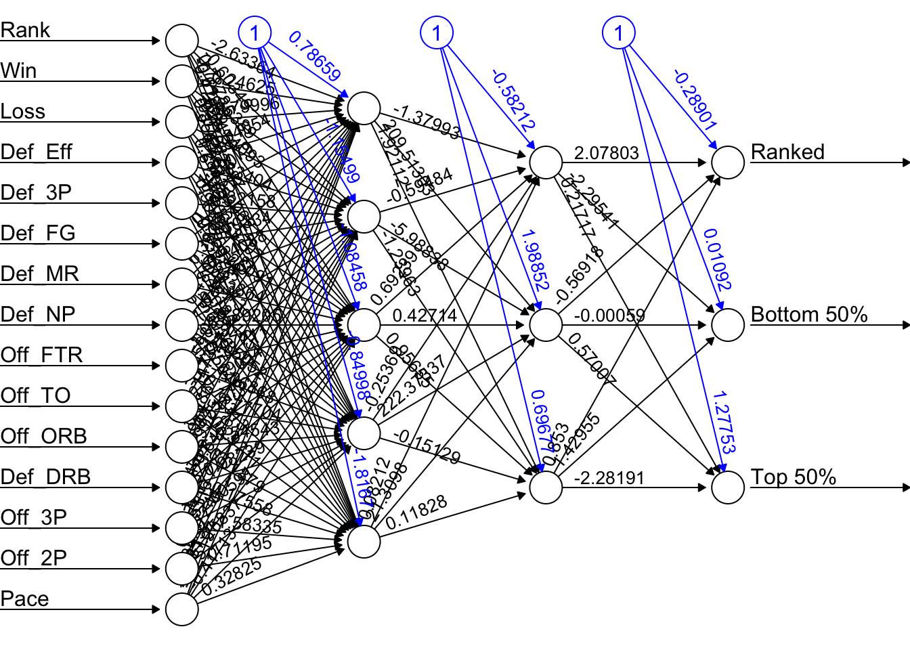

Performed web scraping using Selenium and BeautifulSoup, followed by an in-depth analysis in that included Principal Component Analysis, XGBoost, and neural networks.
Abstract
This project presents an analysis of college basketball team performance based on data from men’s NCAA Basketball. After merging the datasets from haslametrics and teamrankings along with data cleaning and feature engineering in R, the dataset consisted of 16 columns with 361 rows.
Exploratory data analysis includes correlation analysis, visualization of distributions, and principal component analysis (PCA) to address collinearity among variables. Although PCA had good insights, it was not utilized due to its limited account for variance.
The feature engineered variable, ‘Rank_Category’, classifies teams into three categories based on their ‘Rank’ column: Rank (0-25), Top 50% (excluding Rank), and Bottom 50%. Modeling efforts focused on predicting ‘Rank_Category’ using XGBoost with racing ANOVA tuning which resulted in an accuracy of 79.12% and an AUC of 0.918. Variable importance analysis showed key predictors including defensive efficiency, win rate, defensive field goal percentage, offensive 2-point percentage, and offensive turnovers. Additionally, a neural network model achieved a higher accuracy of 97.80%.
Webscraping Data in Python
Scraping the first website Halsametrics.com with selenium
Code
from selenium import webdriverfrom selenium.webdriver.common.by import Byfrom selenium.webdriver.support.ui import WebDriverWaitfrom selenium.webdriver.support import expected_conditions as ECimport pandas as pdimport requestsfrom bs4 import BeautifulSoupfrom io import StringIO# Set up the WebDriver with ChromeOptionschrome_options =webdriver.ChromeOptions()chrome_options.add_argument('/usr/local/bin/chromedriver') # Add the path to chromedriver executable# Initialize the WebDriverdriver =webdriver.Chrome(options=chrome_options)# Navigate to the webpagedriver.get('https://haslametrics.com/')# Wait for the page to load and for the 'Defense' button to be clickablewait =WebDriverWait(driver, 20)defense_button =wait.until(EC.element_to_be_clickable((By.XPATH, '//*[@id="cboRatings"]/option[@value="Defense"]')))# Click the 'Defense' button to load the defensive ratingsdefense_button.click()# Wait for the table to loadwait.until(EC.presence_of_element_located((By.XPATH, '//*[@id="myTable"]')))# Scrape the tabletable =driver.find_element(By.XPATH, '//*[@id="myTable"]')hasla =pd.read_html(table.get_attribute('outerHTML'))[0]# Flatten the MultiIndex columnshasla.columns = [' '.join(col).strip() ifisinstance(col, tuple) else col for col in hasla.columns.values]# Rename 'Unnamed: 1_level_0 Team' to 'Team'hasla.rename(columns={'Unnamed: 1_level_0 Team':'Team'}, inplace=True)# Extracting win/loss information and creating new columnshasla['Win'] = hasla['Team'].str.extract(r'\((\d+)-\d+\)')hasla['Loss'] = hasla['Team'].str.extract(r'\(\d+-(\d+)\)')# Remove parentheses and numbers from 'Team' columnhasla['Team'] = hasla['Team'].replace(regex={'\([^)]*\)':'', '\d+':''})hasla['Team'] = hasla['Team'].str.strip()# Save the DataFrame to Exceldesktop_path ="/Users/nathanbresette/Desktop"hasla.to_excel(f'{desktop_path}/findhasla.xlsx', index=False)# Close the browserdriver.quit()
Scraping the second website teamrankings.com with BeautifulSoup
# Call the function to scrape and merge datacombined_df =scrape_and_merge(urls, new_column_names)combined_df['Team'] = combined_df['Team'].replace({'Miami (OH)':'Miami'})# Save the DataFrame to Exceldesktop_path ="/Users/nathanbresette/Desktop"combined_df.to_excel(f'{desktop_path}/findme.xlsx', index=False)neutral_input =input("Is it a neutral site game (Yes/No): ")# Drop duplicate team names in haslahasla =hasla.drop_duplicates(subset=['Team'])# Drop duplicate team names in combined_dfcombined_df =combined_df.drop_duplicates(subset=['Team'])# Merge the DataFrames based on 'Team'merged_df =pd.merge(hasla, combined_df, on='Team', how='inner')# Save the merged DataFrame to Exceldesktop_path ="/Users/nathanbresette/Desktop"merged_df.to_excel(f'{desktop_path}/merged_data.xlsx', index=False)
Cleaning Data
All further code performed in R:
Once the data has been combined into one data frame, there are over 100 variables. Using dplyr, 16 columns are selected, renamed for easier readability, mutated to correct variable type (numeric, factor, etc), and a new variable is feauture engineered to split the ranks into three categories of Ranked, Top 50%, and Bottom 50%.
The data exploration begins by looking at the correlation between variables. I created a function to make a correlation plot then if the correlation is above the absolute value of 0.6, it will plot the scatter plot of the two correlated variables. Due to the high correlation in this data, I have limited the output to only two of the scatterplots.
Code
library(corrplot)compute_and_plot_correlation<-function(data, threshold=0.6){# Select numeric columnsnumeric_data<-data[, sapply(data, is.numeric)]# Remove rows with missing valuesnumeric_data<-numeric_data[complete.cases(numeric_data), ]# Compute correlation matrixcorrelation_matrix<-cor(numeric_data)# Find pairs of variables with correlation above or below the thresholdhigh_correlation_pairs<-which(abs(correlation_matrix)>threshold&upper.tri(correlation_matrix), arr.ind =TRUE)# Create scatter plots for high correlation pairsplots<-list()for(iin1:nrow(high_correlation_pairs)){var_x<-rownames(correlation_matrix)[high_correlation_pairs[i, 1]]var_y<-rownames(correlation_matrix)[high_correlation_pairs[i, 2]]plot<-ggplot(data =numeric_data, aes_string(x =var_x, y =var_y))+geom_point()+labs(title =paste("Scatter Plot of", var_y, "vs", var_x), x =var_x, y =var_y)+theme_minimal()+theme(plot.title =(element_text(hjust =0.5)))plots[[paste(var_x, var_y, sep ="_")]]<-plot}# Plot correlation matrixcorrplot(correlation_matrix, method ="shade", type ="lower", diag =FALSE, addCoef.col ="black", number.cex =0.5)return(plots)}#Example call to functionscatter_plots<-compute_and_plot_correlation(clean_data)
I also made a function to make histograms for all numeric variables to view the distributions. Because all of our variables are numeric, no bar charts were made to view the distribution of categorical variables.
Code
create_histograms_ggplot<-function(data){# Get numeric variable namesnumeric_vars<-names(data)[sapply(data, is.numeric)]# Initialize an empty list to store ggplot objectsplots<-list()# Loop through each numeric variable and create a histogram using ggplotfor(varinnumeric_vars){# Create ggplot object for histogramplot<-ggplot(data, aes_string(x =var))+geom_histogram(binwidth =0.5, fill ="skyblue", color ="black")+labs(title =paste("Histogram of", var), x =var, y ="Frequency")+theme_minimal()+theme(plot.title =(element_text(hjust =0.5)))# Append ggplot object to the listplots[[var]]<-plot}return(plots)}# Example call to functionhist_plots<-create_histograms_ggplot(clean_data)print(hist_plots[[2]])
components<-prin_comp[["x"]]components<-data.frame(components)components$PC2<--components$PC2components$PC3<--components$PC3components=cbind(components, clean_data$Rank_Category)# Combine components with Ranked labelscomponents<-cbind(components, Rank_Category =clean_data$Rank_Category)# Create Plotly figurefig<-plot_ly(components, x =~PC1, y =~PC2, z =~PC3, color =~Rank_Category, colors =c('#636EFA','#EF553B','#00CC96'), type ="scatter3d", mode ="markers", marker =list(size =4))# Customize layoutfig<-fig%>%layout( title ="61.67% Variance Explained", scene =list(bgcolor ="#e5ecf6"))# Show the plotfig
library(neuralnet)library(caret)library(tidymodels)nndata<-clean_dataset.seed(123)# Put 3/4 of the data into the training set data_split<-initial_split(nndata, prop =3/4, strata =Rank_Category)# Create data frames for the two sets:train_data<-training(data_split)test_data<-testing(data_split)NN<-neuralnet(Rank_Category~., train_data, hidden =c(5,3), linear.output =TRUE)plot(NN, rep ="best")

Confusion Matrix
Code
predicted_classes<-predict(NN, test_data)# Extract predicted class labelspredicted_classes<-max.col(predicted_classes)# Convert the indices to class labelspredicted_classes<-levels(test_data$Rank_Category)[predicted_classes]actual_classes<-test_data$Rank_Categorypredicted_classes<-factor(predicted_classes, levels =levels(actual_classes))# length(predicted_classes)# print(predicted_classes)# Extract actual class labels from the test data# length(actual_classes)# print(actual_classes)# Create a confusion matrixconfusionMatrix(predicted_classes, test_data$Rank_Category)
Confusion Matrix and Statistics
Reference
Prediction Bottom 50% Ranked Top 50%
Bottom 50% 42 0 0
Ranked 0 6 0
Top 50% 2 0 41
Overall Statistics
Accuracy : 0.978
95% CI : (0.9229, 0.9973)
No Information Rate : 0.4835
P-Value [Acc > NIR] : < 2.2e-16
Kappa : 0.9607
Mcnemar's Test P-Value : NA
Statistics by Class:
Class: Bottom 50% Class: Ranked Class: Top 50%
Sensitivity 0.9545 1.00000 1.0000
Specificity 1.0000 1.00000 0.9600
Pos Pred Value 1.0000 1.00000 0.9535
Neg Pred Value 0.9592 1.00000 1.0000
Prevalence 0.4835 0.06593 0.4505
Detection Rate 0.4615 0.06593 0.4505
Detection Prevalence 0.4615 0.06593 0.4725
Balanced Accuracy 0.9773 1.00000 0.9800